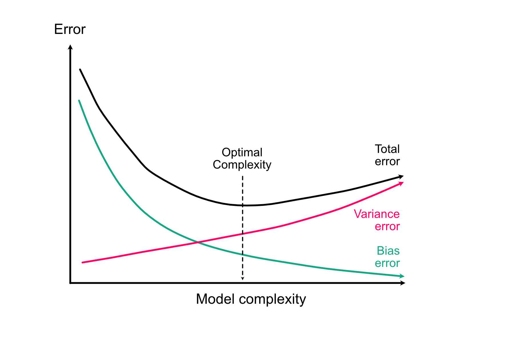
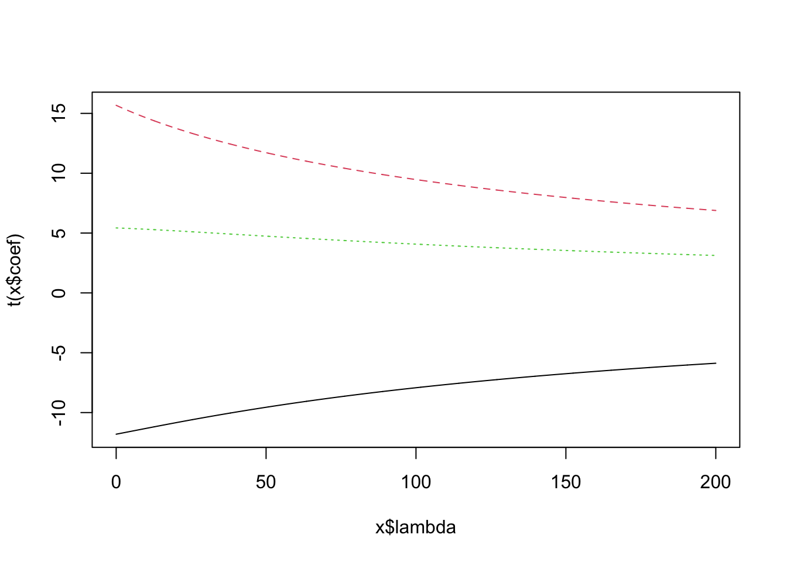
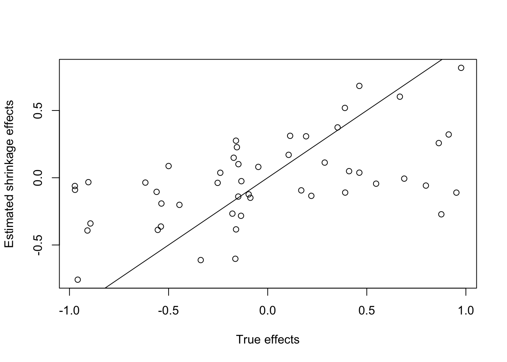

8 Model selection
8.1 The Bias-Variance Trade-off
Apart from causality, the arguably most fundamental idea about modelling choice is the bias-variance trade-off, which applies regardless of whether we are interested in causal effects or predictive models. The idea is the following:
- The more variables / complexity we include in the model, the better it can (in principle) adjust to the true relationship, thus reducing model error from bias.
- The more variables / complexity we include in the model, the larger our error (variance) on the fitted coefficients, thus increasing model error from variance. This means, the model adopts to the given data but no longer to the underlying relationship.
If we sum both terms up, we see that at the total error of a model that is too simple will be dominated by bias (underfitting), and the total error of a model that is too complex will be dominated by variance (overfitting):
Let’s confirm this with a small simulation - let’s assume I have a simple relationship between x and y:
set.seed(123)
x = runif(100)
y = 0.25 * x + rnorm(100, sd = 0.3)
summary(lm(y~x))
Call:
lm(formula = y ~ x)
Residuals:
Min 1Q Median 3Q Max
-0.67139 -0.18397 -0.00592 0.17890 0.66517
Coefficients:
Estimate Std. Error t value Pr(>|t|)
(Intercept) -0.002688 0.058816 -0.046 0.964
x 0.223051 0.102546 2.175 0.032 *
---
Signif. codes: 0 '***' 0.001 '**' 0.01 '*' 0.05 '.' 0.1 ' ' 1
Residual standard error: 0.2908 on 98 degrees of freedom
Multiple R-squared: 0.04605, Adjusted R-squared: 0.03632
F-statistic: 4.731 on 1 and 98 DF, p-value: 0.03203As you see, the effect is significant. Now, I add 80 new variables to the model which are just noise
xNoise = matrix(runif(8000), ncol = 80)
dat = data.frame(y=y,x=x, xNoise)
fullModel = lm(y~., data = dat)
summary(fullModel)
Call:
lm(formula = y ~ ., data = dat)
Residuals:
Min 1Q Median 3Q Max
-0.263130 -0.086990 -0.007075 0.095086 0.293818
Coefficients:
Estimate Std. Error t value Pr(>|t|)
(Intercept) 0.818772 1.309581 0.625 0.5397
x 0.187245 0.275626 0.679 0.5056
X1 0.065985 0.288601 0.229 0.8217
X2 -0.205767 0.226155 -0.910 0.3749
X3 -0.241677 0.264493 -0.914 0.3729
X4 -0.112305 0.259382 -0.433 0.6702
X5 -0.007687 0.278844 -0.028 0.9783
X6 0.016095 0.194323 0.083 0.9349
X7 0.210212 0.288974 0.727 0.4763
X8 0.248545 0.361409 0.688 0.5004
X9 -0.197172 0.441156 -0.447 0.6602
X10 0.206384 0.246107 0.839 0.4127
X11 -0.253228 0.249239 -1.016 0.3231
X12 -0.146196 0.218184 -0.670 0.5113
X13 -0.191434 0.629232 -0.304 0.7644
X14 0.079965 0.261570 0.306 0.7633
X15 -0.340678 0.338473 -1.007 0.3275
X16 -0.565212 0.291535 -1.939 0.0684 .
X17 0.179863 0.510105 0.353 0.7285
X18 0.102642 0.242366 0.424 0.6769
X19 -0.097458 0.286541 -0.340 0.7377
X20 0.030439 0.278389 0.109 0.9141
X21 -0.144404 0.378193 -0.382 0.7071
X22 0.099958 0.207603 0.481 0.6360
X23 0.261590 0.299691 0.873 0.3942
X24 0.307017 0.290396 1.057 0.3044
X25 -0.261906 0.273628 -0.957 0.3512
X26 0.348920 0.243841 1.431 0.1696
X27 -0.036098 0.228266 -0.158 0.8761
X28 0.287817 0.270679 1.063 0.3017
X29 0.033879 0.307206 0.110 0.9134
X30 0.062557 0.362398 0.173 0.8649
X31 0.172122 0.265290 0.649 0.5247
X32 0.105700 0.201368 0.525 0.6061
X33 -0.147496 0.252870 -0.583 0.5669
X34 -0.167456 0.263864 -0.635 0.5337
X35 0.100169 0.178501 0.561 0.5816
X36 0.088712 0.295791 0.300 0.7677
X37 0.216354 0.323429 0.669 0.5120
X38 0.291084 0.317911 0.916 0.3720
X39 -0.012332 0.240035 -0.051 0.9596
X40 0.243437 0.367832 0.662 0.5165
X41 0.380828 0.319131 1.193 0.2482
X42 -0.074005 0.253109 -0.292 0.7733
X43 0.098013 0.227937 0.430 0.6723
X44 0.198824 0.302047 0.658 0.5187
X45 0.199577 0.219516 0.909 0.3753
X46 -0.421600 0.369403 -1.141 0.2687
X47 0.154510 0.230492 0.670 0.5111
X48 -0.413987 0.262710 -1.576 0.1325
X49 -0.077130 0.228585 -0.337 0.7397
X50 -0.096674 0.347191 -0.278 0.7838
X51 -0.200855 0.236771 -0.848 0.4074
X52 -0.043446 0.242367 -0.179 0.8597
X53 -0.131982 0.369716 -0.357 0.7253
X54 -0.195446 0.361531 -0.541 0.5954
X55 -0.236722 0.256146 -0.924 0.3676
X56 -0.368766 0.265788 -1.387 0.1822
X57 -0.334641 0.257425 -1.300 0.2100
X58 0.231276 0.237317 0.975 0.3427
X59 -0.096390 0.273072 -0.353 0.7282
X60 0.311881 0.271568 1.148 0.2658
X61 0.242950 0.217372 1.118 0.2784
X62 -0.084825 0.442712 -0.192 0.8502
X63 0.029619 0.298468 0.099 0.9220
X64 -0.028104 0.261794 -0.107 0.9157
X65 -0.525963 0.361913 -1.453 0.1634
X66 0.144431 0.228127 0.633 0.5346
X67 -0.128939 0.258665 -0.498 0.6242
X68 0.112637 0.267554 0.421 0.6787
X69 0.348617 0.248531 1.403 0.1777
X70 0.006882 0.257210 0.027 0.9789
X71 -0.246016 0.316239 -0.778 0.4467
X72 0.320674 0.376736 0.851 0.4058
X73 -0.088619 0.248323 -0.357 0.7253
X74 -0.258652 0.245951 -1.052 0.3069
X75 0.304042 0.284942 1.067 0.3001
X76 -0.414025 0.290564 -1.425 0.1713
X77 -0.087306 0.272738 -0.320 0.7526
X78 -0.072697 0.250050 -0.291 0.7746
X79 -0.138113 0.280764 -0.492 0.6287
X80 -0.439736 0.259721 -1.693 0.1077
---
Signif. codes: 0 '***' 0.001 '**' 0.01 '*' 0.05 '.' 0.1 ' ' 1
Residual standard error: 0.3149 on 18 degrees of freedom
Multiple R-squared: 0.7946, Adjusted R-squared: -0.1299
F-statistic: 0.8595 on 81 and 18 DF, p-value: 0.6891The effect estimates are relatively unchanged, but the CI has increased, and the p-values are n.s.
TipPrecision variables
We have learned that adding variables increases the complexity of the model and thus the variance/uncertainty of the model. However, there are so-called precision variables that, when added to the model, actually reduce the variance/uncertainty of the model! Technically, they explain the response variable so well that they help to improve the overall fit of the model and thus help to reduce the overall variance of the model.
Here’s a small example based on toy data:
set.seed(42)
X = runif(100)
P = runif(100)
Y = 0.8*X + 10*P + rnorm(100, sd = 0.5)Without the precision variable (P):
summary(lm(Y~X))
Call:
lm(formula = Y ~ X)
Residuals:
Min 1Q Median 3Q Max
-5.3935 -2.7579 0.3701 2.2876 4.8379
Coefficients:
Estimate Std. Error t value Pr(>|t|)
(Intercept) 5.3465 0.5826 9.177 7.39e-15 ***
X 0.4364 0.9639 0.453 0.652
---
Signif. codes: 0 '***' 0.001 '**' 0.01 '*' 0.05 '.' 0.1 ' ' 1
Residual standard error: 2.896 on 98 degrees of freedom
Multiple R-squared: 0.002088, Adjusted R-squared: -0.008095
F-statistic: 0.205 on 1 and 98 DF, p-value: 0.6517Effect of X is n.s. (standard error = 0.96)
With the precision variable (P):
summary(lm(Y~X+P))
Call:
lm(formula = Y ~ X + P)
Residuals:
Min 1Q Median 3Q Max
-0.97608 -0.28268 0.00618 0.27548 1.38684
Coefficients:
Estimate Std. Error t value Pr(>|t|)
(Intercept) -0.04947 0.12646 -0.391 0.697
X 0.75999 0.15197 5.001 2.54e-06 ***
P 10.05137 0.16200 62.045 < 2e-16 ***
---
Signif. codes: 0 '***' 0.001 '**' 0.01 '*' 0.05 '.' 0.1 ' ' 1
Residual standard error: 0.4563 on 97 degrees of freedom
Multiple R-squared: 0.9755, Adjusted R-squared: 0.975
F-statistic: 1929 on 2 and 97 DF, p-value: < 2.2e-16The effect of X on Y is now significant (standard error = 0.15)!
8.2 Model Selection Methods
Because of the bias-variance trade-off, we cannot just fit the most complex model that we can imagine. Of course, such a model would have the lowest possible bias, but we would lose all power to see effects. Therefore, we must put bounds on model complexity. There are many methods to do so, but I would argue that three of them stand out
- Test whether there is evidence for going to a more complex model -> Likelihood Ratio Tests
- Optimize a penalized fit to the data -> AIC selection
- Specify a preference for parameter estimates to be small -> shrinkage estimation
Let’s go through them one by one
8.2.1 Likelihood-ratio tests
A likelihood-ratio test (LRT) is a hypothesis test that can be used to compare 2 nested models. Nested means that the simpler of the 2 models is included in the more complex model.
The more complex model will always fit the data better, i.e. have a higher likelihood. This is the reason why you shouldn’t use fit or residual patterns for model selection. The likelihood-ratio test tests whether this improvement in likelihood is significantly larger than one would expect if the simpler model is the correct model.
Likelihood-ratio tests are used to get the p-values in an R ANOVA, and thus you can also use the anova function to perform an likelihood-ratio test between 2 models (Note: For simple models, this will run an F-test, which is technically not exactly a likelihood-ratio test, but the principle is the same):
# Model 1
m1 = lm(Ozone ~ Wind , data = airquality)
# Model 2
m2 = lm(Ozone ~ Wind + Temp, data = airquality)
# LRT
anova(m1, m2)Analysis of Variance Table
Model 1: Ozone ~ Wind
Model 2: Ozone ~ Wind + Temp
Res.Df RSS Df Sum of Sq F Pr(>F)
1 114 79859
2 113 53973 1 25886 54.196 3.149e-11 ***
---
Signif. codes: 0 '***' 0.001 '**' 0.01 '*' 0.05 '.' 0.1 ' ' 18.2.2 AIC model selection
Another method for model selection, and probably the most widely used, also because it does not require that models are nested, is the AIC = Akaike Information Criterion.
The AIC is defined as \(-2 \ln(\text{likelihood}) + 2k\), where \(k\) = number of parameters.
Essentially, this means AIC = Fit - Penalty for complexity.
Lower AIC is better!
m1 = lm(Ozone ~ Temp, data = airquality)
m2 = lm(Ozone ~ Temp + Wind, data = airquality)
AIC(m1)[1] 1067.706AIC(m2)[1] 1049.741Note 1: It can be shown that AIC is asymptotically identical to leave-one-out cross-validation, so what AIC is optimizing is essentially the predictive error of the model on new data.
Note 2: There are other information criteria, such as BIC, DIC, WAIC etc., as well as sample-size corrected versions of either of them (e.g. AICc). The difference between the methods is beyond the scope of this course. For the most common one (BIC), just the note that this penalizes more strongly for large data sets, and thus corrects a tendency of AIC to overfit for large data sets.
8.2.3 Shrinkage estimation
A third option for model selection are shrinkage estimators. These include the LASSO and ridge, but also random-effects could be seen as shrinkage estimators.
The basic idea behind these estimators is not to reduce the number of parameters, but to reduce the flexibility of the model by introducing a penalty on the regression coefficients that code a preference for smaller or zero coefficient values. Effectively, this can either amount to model selection (because some coefficients are shrunk directly to zero), or it can mean that we can fit very large models while still being able to do good predictions, or avoid overfitting.
To put a ridge penalty on the standard lm, we can use
library(MASS)
lm.ridge(Ozone ~ Wind + Temp + Solar.R, data = airquality, lambda = 2) Wind Temp Solar.R
-62.73376169 -3.30622990 1.62842247 0.05961015 We can see how the regression estimates vary for different penalties via
plot( lm.ridge( Ozone ~ Wind + Temp + Solar.R, data = airquality,
lambda = seq(0, 200, 0.1) ) )
Tip(Adaptive) Shrinking with glmmTMB
We can use glmmTMB for shrinkage estimation by changing the slopes into random slopes with only one level in a dummy grouping variable:
- Constant shrinkage
library(glmmTMB)
airquality$group = as.factor(rep(1, nrow(airquality)))
ridgeGlmmTMB1 = glmmTMB(Ozone~(0+ Wind + Temp + Solar.R || group ),
data = airquality,
start = list(theta = rep(1e-5, 3)),
map = list(theta = factor(c(NA, NA, NA))))
ridgeGlmmTMB10 = glmmTMB(Ozone~(0+ Wind + Temp + Solar.R || group ),
data = airquality,
start = list(theta = rep(10, 3)),
map = list(theta = factor(c(NA, NA, NA))))
summary(ridgeGlmmTMB1) Family: gaussian ( identity )
Formula: Ozone ~ (0 + Wind + Temp + Solar.R || group)
Data: airquality
AIC BIC logLik -2*log(L) df.resid
1020.3 1025.8 -508.2 1016.3 109
Random effects:
Conditional model:
Groups Name Variance Std.Dev.
group Wind 1.0 1.00
Temp 1.0 1.00
Solar.R 1.0 1.00
Residual 452.3 21.27
Number of obs: 111, groups: group, 1
Dispersion estimate for gaussian family (sigma^2): 452
Conditional model:
Estimate Std. Error z value Pr(>|z|)
(Intercept) -80.27 20.90 -3.841 0.000122 ***
---
Signif. codes: 0 '***' 0.001 '**' 0.01 '*' 0.05 '.' 0.1 ' ' 1summary(ridgeGlmmTMB10) Family: gaussian ( identity )
Formula: Ozone ~ (0 + Wind + Temp + Solar.R || group)
Data: airquality
AIC BIC logLik -2*log(L) df.resid
1069.1 1074.6 -532.6 1065.1 109
Random effects:
Conditional model:
Groups Name Variance Std.Dev.
group Wind 4.852e+08 22026.47
Temp 4.852e+08 22026.47
Solar.R 4.852e+08 22026.47
Residual 4.445e+02 21.08
Number of obs: 111, groups: group, 1
Dispersion estimate for gaussian family (sigma^2): 444
Conditional model:
Estimate Std. Error z value Pr(>|z|)
(Intercept) -64.34 22.95 -2.804 0.00505 **
---
Signif. codes: 0 '***' 0.001 '**' 0.01 '*' 0.05 '.' 0.1 ' ' 1Note: The (…||…) syntax will model the individual random slopes individually (the default is to fit a covariance matrix between the random effects).
We can use the map and the start arguments to a) mark the variances of the random slopes as constant and b) to set them so specific values (smaller values mean higher regularization).
Random effects are now our slopes:
ranef(ridgeGlmmTMB1)[[1]]$g Wind Temp Solar.R
1 -2.426747 1.736524 0.06169567ranef(ridgeGlmmTMB10)[[1]]$g Wind Temp Solar.R
1 -3.333591 1.652093 0.05982059For higher variances they are stronger biased to 0.
- Adaptive shrinkage
The next obvious step would be to let the model and the data decide on the variance estimate (the amount of shrinkage), which is called adaptive shrinkage.
Small simulation example:
set.seed(123)
n = 30
p = 50
X = matrix(runif(p*n), n, p)
head(X) [,1] [,2] [,3] [,4] [,5] [,6] [,7]
[1,] 0.2875775 0.96302423 0.66511519 0.1306957 0.6478935 0.8474532 0.8397678
[2,] 0.7883051 0.90229905 0.09484066 0.6531019 0.3198206 0.4975273 0.3124482
[3,] 0.4089769 0.69070528 0.38396964 0.3435165 0.3077200 0.3879090 0.7082903
[4,] 0.8830174 0.79546742 0.27438364 0.6567581 0.2197676 0.2464490 0.2650178
[5,] 0.9404673 0.02461368 0.81464004 0.3203732 0.3694889 0.1110965 0.5943432
[6,] 0.0455565 0.47779597 0.44851634 0.1876911 0.9842192 0.3899944 0.4812898
[,8] [,9] [,10] [,11] [,12] [,13] [,14]
[1,] 0.48204261 0.5468262 0.871043414 0.784575267 0.6172353 0.1438170 0.9770990
[2,] 0.25296493 0.6623176 0.006300784 0.009429905 0.2862853 0.1928159 0.2963022
[3,] 0.21625479 0.1716985 0.072057124 0.779065883 0.7377974 0.8967387 0.7259830
[4,] 0.67437639 0.6330554 0.164211225 0.729390652 0.8340543 0.3081196 0.7856878
[5,] 0.04766363 0.3118697 0.770334074 0.630131853 0.3142708 0.3633005 0.1054177
[6,] 0.70085309 0.7245543 0.735184306 0.480910830 0.4925665 0.7839465 0.2395946
[,15] [,16] [,17] [,18] [,19] [,20] [,21]
[1,] 0.5474595 0.5238226 0.2151665 0.46471377 0.80094821 0.5533140 0.2372297
[2,] 0.6442402 0.3498018 0.8139337 0.08253118 0.09164469 0.9060481 0.6864904
[3,] 0.5962635 0.2405307 0.3077639 0.86010685 0.83210777 0.5874614 0.2258184
[4,] 0.3219374 0.0581918 0.6877427 0.39566064 0.27685507 0.4234637 0.3184946
[5,] 0.8911143 0.2366197 0.9326811 0.73589935 0.75311010 0.9495853 0.1739838
[6,] 0.6262569 0.8900779 0.1157797 0.17174341 0.96415257 0.7090379 0.8014296
[,22] [,23] [,24] [,25] [,26] [,27] [,28]
[1,] 0.7591353 0.84555612 0.03978064 0.4186692 0.27776932 0.25880120 0.0494156
[2,] 0.8448346 0.80643516 0.63480051 0.7178845 0.24940659 0.81946714 0.6951052
[3,] 0.4579216 0.11733123 0.53956091 0.7425391 0.15943548 0.01547767 0.3632616
[4,] 0.7296317 0.71268655 0.14010355 0.8719988 0.07163006 0.65440077 0.8841336
[5,] 0.1040786 0.23526886 0.28371178 0.6078680 0.55743758 0.81171958 0.7752972
[6,] 0.2199832 0.07495675 0.58303060 0.7562034 0.48983705 0.46136893 0.1392036
[,29] [,30] [,31] [,32] [,33] [,34] [,35]
[1,] 0.9624213 0.1406462 0.9236992 0.8868626 0.5081581 0.0872193 0.4612166
[2,] 0.7363340 0.1697691 0.5425984 0.2040959 0.4495999 0.2237800 0.7927383
[3,] 0.6127235 0.7619853 0.8523646 0.7706230 0.6232614 0.5721487 0.5855656
[4,] 0.1199289 0.5273949 0.5835629 0.5963630 0.1399779 0.4001692 0.3947590
[5,] 0.5502590 0.8609894 0.6683236 0.9576697 0.9079464 0.5654654 0.8112373
[6,] 0.2627563 0.6735550 0.5113146 0.1586884 0.5694433 0.8296239 0.3185631
[,36] [,37] [,38] [,39] [,40] [,41] [,42]
[1,] 0.7088554 0.3923313 0.07228658 0.83179032 0.4105144 0.8585914 0.004638151
[2,] 0.8267155 0.1719368 0.82633158 0.40536388 0.4018139 0.8873848 0.277560080
[3,] 0.8918963 0.3196421 0.47954408 0.07263193 0.6485563 0.4890915 0.325203143
[4,] 0.5394107 0.4135551 0.39122878 0.95375862 0.9163057 0.7180918 0.588706277
[5,] 0.5553136 0.7593357 0.29912278 0.21718378 0.2166621 0.4867056 0.249684701
[6,] 0.2764399 0.2718902 0.24430825 0.40562527 0.5479989 0.9887089 0.043117281
[,43] [,44] [,45] [,46] [,47] [,48] [,49]
[1,] 0.24872636 0.8157679 0.8061095 0.02489827 0.46357376 0.7223989 0.14878158
[2,] 0.61495395 0.5262726 0.3377528 0.00484174 0.35472962 0.9220046 0.61276590
[3,] 0.03175732 0.2030400 0.9162859 0.13137825 0.88242303 0.6138409 0.04196682
[4,] 0.14642354 0.8481077 0.3571064 0.02481710 0.07580286 0.1609665 0.49835899
[5,] 0.70307297 0.3704942 0.9753650 0.09212945 0.88329119 0.1829407 0.73950822
[6,] 0.06556071 0.3033252 0.3843785 0.47555822 0.18822184 0.7301836 0.75389978
[,50]
[1,] 0.7001786
[2,] 0.0655749
[3,] 0.7330400
[4,] 0.3959316
[5,] 0.4614878
[6,] 0.7252994effects = runif(p, -1,1)
Y = X%*%effects + rnorm(n)30 observations, 50 predictors, each with its own true effect drawn from a Uniform(-1, 1) distribution, let’s start with a fixed-effect model:
m1 = glmmTMB(Y~X)Warning in glmmTMB(Y ~ X): use of the 'data' argument is recommendeddropping columns from rank-deficient conditional model: X30, X31, X32, X33, X34, X35, X36, X37, X38, X39, X40, X41, X42, X43, X44, X45, X46, X47, X48, X49, X50Warning in finalizeTMB(TMBStruc, obj, fit, h, data.tmb.old): Model convergence
problem; non-positive-definite Hessian matrix. See vignette('troubleshooting')Warning in finalizeTMB(TMBStruc, obj, fit, h, data.tmb.old): Model convergence
problem; function evaluation limit reached without convergence (9). See
vignette('troubleshooting'), help('diagnose')summary(m1) Family: gaussian ( identity )
Formula: Y ~ X
AIC BIC logLik -2*log(L) df.resid
NA NA NA NA -1
Dispersion estimate for gaussian family (sigma^2): 1.03e-06
Conditional model:
Estimate Std. Error z value Pr(>|z|)
(Intercept) 6.292147 0.008442 745.4 <2e-16 ***
X1 2.318114 0.002618 885.5 <2e-16 ***
X2 -2.781089 0.003650 -762.0 <2e-16 ***
X3 -2.164066 0.002563 -844.2 <2e-16 ***
X4 -2.296509 0.004205 -546.2 <2e-16 ***
X5 -3.596781 0.003102 -1159.4 <2e-16 ***
X6 -2.243081 0.002638 -850.4 <2e-16 ***
X7 -3.018425 0.003666 -823.3 <2e-16 ***
X8 1.626393 0.002524 644.3 <2e-16 ***
X9 -1.283200 0.002433 -527.4 <2e-16 ***
X10 0.599021 0.002334 256.6 <2e-16 ***
X11 -5.081301 0.004303 -1181.0 <2e-16 ***
X12 -0.160191 0.002116 -75.7 <2e-16 ***
X13 2.671564 0.004333 616.6 <2e-16 ***
X14 6.783907 0.004730 1434.2 <2e-16 ***
X15 -3.782583 0.002070 -1827.7 <2e-16 ***
X16 1.125239 0.004558 246.9 <2e-16 ***
X17 -0.438207 0.003366 -130.2 <2e-16 ***
X18 -2.433692 0.003201 -760.2 <2e-16 ***
X19 4.510137 0.002949 1529.2 <2e-16 ***
X20 1.182427 0.002699 438.0 <2e-16 ***
X21 -2.414001 0.002371 -1018.2 <2e-16 ***
X22 -5.986762 0.005489 -1090.7 <2e-16 ***
X23 6.962840 0.004361 1596.7 <2e-16 ***
X24 -1.733277 0.002813 -616.1 <2e-16 ***
X25 2.946605 0.003565 826.6 <2e-16 ***
X26 -0.373676 0.001769 -211.2 <2e-16 ***
X27 0.648173 0.001296 500.1 <2e-16 ***
X28 -6.191007 0.002481 -2495.1 <2e-16 ***
X29 0.796629 0.002039 390.8 <2e-16 ***
X30 NA NA NA NA
X31 NA NA NA NA
X32 NA NA NA NA
X33 NA NA NA NA
X34 NA NA NA NA
X35 NA NA NA NA
X36 NA NA NA NA
X37 NA NA NA NA
X38 NA NA NA NA
X39 NA NA NA NA
X40 NA NA NA NA
X41 NA NA NA NA
X42 NA NA NA NA
X43 NA NA NA NA
X44 NA NA NA NA
X45 NA NA NA NA
X46 NA NA NA NA
X47 NA NA NA NA
X48 NA NA NA NA
X49 NA NA NA NA
X50 NA NA NA NA
---
Signif. codes: 0 '***' 0.001 '**' 0.01 '*' 0.05 '.' 0.1 ' ' 1Not surprising, we get many warnings about convergence issues and NAs, because we have more predictors (p = 50) than observations (n = 30) - the fixed-effect model is not even identifiable. Also, the effects that can be estimated are not even close to their true values.
Let’s try adaptive shrinkage. As before, we turn each predictor’s slope into a random slope within a dummy group that has only one level:
data = data.frame(Y = Y, X, group = as.factor(rep(1, n)))
form = paste0("Y~ 0+ (0+",paste0(paste0( "X", 1:p ), collapse = "+"),"||group)" )
print(form)[1] "Y~ 0+ (0+X1+X2+X3+X4+X5+X6+X7+X8+X9+X10+X11+X12+X13+X14+X15+X16+X17+X18+X19+X20+X21+X22+X23+X24+X25+X26+X27+X28+X29+X30+X31+X32+X33+X34+X35+X36+X37+X38+X39+X40+X41+X42+X43+X44+X45+X46+X47+X48+X49+X50||group)"What we want for a proper (ridge-like) adaptive shrinkage is a single, shared variance for all p random slopes, estimated jointly by pooling information across all p coefficients at once - this is the classic “ridge regression as a mixed model” trick. We achieve this with the map argument. By default, the || syntax would give every predictor its own, independently estimated variance (p = 50 separate variance parameters) - but map lets us tell glmmTMB which of its internal parameters should be tied together (estimated as one shared value) instead of independently. Giving all p entries of theta the same factor level ties them into a single, freely estimated parameter. This is needed here because, with only one level in group, each individually estimated variance would be informed by essentially a single realized slope - nowhere near enough information to estimate 50 separate variances reliably. Tying them together pools all p coefficients into the estimation of that one shared variance, which is far better identified. Note that, unlike the constant-shrinkage example above, where NA fixed the variances at chosen constants, a shared (non-NA) level still lets the model estimate their common value from the data:
m2 = glmmTMB(as.formula(form), data = data,
start = list(theta = rep(0, p)),
map = list(theta = factor(rep(1, p))))
summary(m2) Family: gaussian ( identity )
Formula:
Y ~ 0 + (0 + X1 + X2 + X3 + X4 + X5 + X6 + X7 + X8 + X9 + X10 +
X11 + X12 + X13 + X14 + X15 + X16 + X17 + X18 + X19 + X20 +
X21 + X22 + X23 + X24 + X25 + X26 + X27 + X28 + X29 + X30 +
X31 + X32 + X33 + X34 + X35 + X36 + X37 + X38 + X39 + X40 +
X41 + X42 + X43 + X44 + X45 + X46 + X47 + X48 + X49 + X50 || group)
Data: data
AIC BIC logLik -2*log(L) df.resid
107.5 110.3 -51.8 103.5 28
Random effects:
Conditional model:
Groups Name Variance Std.Dev.
group X1 0.2910 0.5395
X2 0.2910 0.5395
X3 0.2910 0.5395
X4 0.2910 0.5395
X5 0.2910 0.5395
X6 0.2910 0.5395
X7 0.2910 0.5395
X8 0.2910 0.5395
X9 0.2910 0.5395
X10 0.2910 0.5395
... ... ...
Residual 0.6375 0.7984
Number of obs: 30, groups: group, 1
Dispersion estimate for gaussian family (sigma^2): 0.638 Now, extract the estimates and compare them to the true values
shrinkageEstimates = as.numeric(ranef(m2)$cond$group)
plot(effects, shrinkageEstimates, xlab = "True effects", ylab = "Estimated shrinkage effects")
abline(0,1)
Note that there is quite a bit of variance, but this is to be expected when we estimate 50 parameters with 30 observations. However, there is a clear signal, in the sense that the correlation between true and estimated effects is significantly positive:
cor.test(effects, shrinkageEstimates)
Pearson's product-moment correlation
data: effects and shrinkageEstimates
t = 4.3793, df = 48, p-value = 6.425e-05
alternative hypothesis: true correlation is not equal to 0
95 percent confidence interval:
0.3006812 0.7074441
sample estimates:
cor
0.5343104 8.2.4 P-hacking
The most dubious model selection strategy, actually considered scientific misconduct, is p-hacking. The purpose of this exercise is to show you how not to do model selection, i.e, that by playing around with the variables, you can make any outcome significant. That is why your hypothesis needs to be fixed before looking at the data, ideally through pre-registration, based on an experimental plan or a causal analysis. Here is the example:
Here some more inspiration on p-hacking:
- Hack Your Way To Scientific Glory: https://projects.fivethirtyeight.com/p-hacking/
- False-Positive Psychology: Undisclosed Flexibility in Data Collection and Analysis Allows Presenting Anything as Significant: https://journals.sagepub.com/doi/full/10.1177/0956797611417632
- Sixty seconds on … P-hacking: https://sci-hub.tw/https://www.bmj.com/content/362/bmj.k4039
John Oliver about p-hacking:
8.3 Problems with model selection for inference
Model selection works great to generate predictive models. The big problem with model selection is when we want interpret effect estimates. Here, we have two problems
- Model selection doesn’t respect causal relationships
- Model selection methods often lead to wrong p-values, CIs etc.
Let’s look at them 1 by one:
8.3.1 Causality
In general, model selection does NOT solve the problem of estimating causal effects. Quite the contrary: most model selection methods act against estimating causal effects. Consider the following example, where we create a response that causally depends on two collinear predictors, both with an effect size of 1
set.seed(123)
x1 = runif(100)
x2 = 0.8 * x1 + 0.2 *runif(100)
y = x1 + x2 + rnorm(100)Given the structure of the data, we should run a multiple regression, and the multiple regression will get it roughly right: both effects are n.s., but estimates are roughly right and true values are in the 95% CI.
m1 = lm(y ~ x1 + x2)
summary(m1)
Call:
lm(formula = y ~ x1 + x2)
Residuals:
Min 1Q Median 3Q Max
-1.8994 -0.6821 -0.1086 0.5749 3.3663
Coefficients:
Estimate Std. Error t value Pr(>|t|)
(Intercept) -0.1408 0.2862 -0.492 0.624
x1 1.2158 1.5037 0.809 0.421
x2 0.8518 1.8674 0.456 0.649
Residual standard error: 0.9765 on 97 degrees of freedom
Multiple R-squared: 0.237, Adjusted R-squared: 0.2212
F-statistic: 15.06 on 2 and 97 DF, p-value: 2.009e-06A model selection (more on the method later) will remove one of the variables and consequently overestimates the effect size (effect size too high, true causal value outside the 95% CI).
m2 = MASS::stepAIC(m1)summary(m2)
Call:
lm(formula = y ~ x1)
Residuals:
Min 1Q Median 3Q Max
-1.9047 -0.6292 -0.1019 0.6077 3.3394
Coefficients:
Estimate Std. Error t value Pr(>|t|)
(Intercept) -0.04633 0.19670 -0.236 0.814
x1 1.88350 0.34295 5.492 3.13e-07 ***
---
Signif. codes: 0 '***' 0.001 '**' 0.01 '*' 0.05 '.' 0.1 ' ' 1
Residual standard error: 0.9725 on 98 degrees of freedom
Multiple R-squared: 0.2353, Adjusted R-squared: 0.2275
F-statistic: 30.16 on 1 and 98 DF, p-value: 3.134e-07If you understand what AIC model selection is doing, you wouldn’t be concerned - this is actually not a bug, but rather, the method is doing exactly what it is designed for. However, it was not designed to estimate causal effects. Let’s do another simulation: here, x1,x2 and x3 all have the same effect on the response, but x1 and x2 are highly collinear, while x3 is independent
set.seed(123)
x1 = runif(100)
x2 = 0.95 * x1 + 0.05 *runif(100)
x3 = runif(100)
y = x1 + x2 + x3 + rnorm(100)
m1 = lm(y ~ x1)
AIC(m1)[1] 286.2746Comparing a base model with only x1 to x1 + x2
m2 = lm(y ~ x1 + x2)
anova(m1, m2)Analysis of Variance Table
Model 1: y ~ x1
Model 2: y ~ x1 + x2
Res.Df RSS Df Sum of Sq F Pr(>F)
1 98 96.548
2 97 94.066 1 2.4817 2.5591 0.1129AIC(m2)[1] 285.6705The same for the comparison of x1 to x1 + x3
m3 = lm(y ~ x1 + x3)
anova(m1, m3)Analysis of Variance Table
Model 1: y ~ x1
Model 2: y ~ x1 + x3
Res.Df RSS Df Sum of Sq F Pr(>F)
1 98 96.548
2 97 86.848 1 9.6998 10.834 0.001391 **
---
Signif. codes: 0 '***' 0.001 '**' 0.01 '*' 0.05 '.' 0.1 ' ' 1AIC(m3)[1] 277.6868What we see is that the model selection methods are far more enthusiastic about including x3. And with good reason: x3 is an independent predictor, so adding x3 improves the model a lot. The effect of x2, however, is mostly already included in x1, so adding x2 will only slightly improve the model. Thus, from the point of view of how good the data is explained, it doesn’t pay off to add x2. From the causal viewpoint, however, adding x3 is irrelevant, because it is not a confounder, while adding x2 is crucial (assuming the causal direction is such that it is a confounder).
8.3.2 P-values
The second problem with model selection is the calibration of p-values. Let’s revisit our simulation example from the bias-variance trade-off, where we added 80 noisy predictors with no effect to a situation where we had one variable with an effect.
set.seed(123)
x = runif(100)
y = 0.25 * x + rnorm(100, sd = 0.3)
xNoise = matrix(runif(8000), ncol = 80)
dat = data.frame(y=y,x=x, xNoise)
fullModel = lm(y~., data = dat)We saw before that the y~x effect is n.s. after adding all 80 predictors. Let’s use AIC in a stepwise model selection procedure to reduce model complexity
Tip
Systematic LRT or AIC model selections are often used stepwise or global. Stepwise means that start with the most simple (forward) or the most comples (backward) model, and then run a chain of model selection steps (AIC or LRT) adding (forward) or removing (backward) complexity until we arrive at an optimum. Global means that we run immediately all possible models and compare their AIC. The main function for stepwise selection is MASS::StepAIC, for global selection MuMIn::dredge. There was a lot of discussion about step-wise vs. global selection in the literature, that mostly revolved around the fact that a stepwise selection is faster, but will not always find the global optimum. However, compared to the other problems discussed here (causality, p-values), I do not consider this a serious problem. Thus, if you can, run a global selection by all means, but if this is computationally prohibitive, stepwise selections are also fine.
library(MASS)
reduced = stepAIC(fullModel)
Note
When you inspect the output of stepAIC, you can see that the function calculates at each step the AIC improvement for each predictor that could be removed, and then chooses to remove the predictor that leads to the strongest AIC improvement first.
Here is the selected model
summary(reduced)
Call:
lm(formula = y ~ x + X2 + X3 + X4 + X7 + X8 + X9 + X10 + X11 +
X12 + X13 + X15 + X16 + X17 + X19 + X23 + X24 + X25 + X26 +
X28 + X32 + X34 + X36 + X37 + X38 + X40 + X41 + X42 + X44 +
X45 + X46 + X47 + X48 + X49 + X51 + X54 + X55 + X56 + X57 +
X58 + X60 + X61 + X65 + X66 + X67 + X69 + X71 + X72 + X74 +
X75 + X76 + X79 + X80, data = dat)
Residuals:
Min 1Q Median 3Q Max
-0.29437 -0.11119 -0.00176 0.10598 0.33330
Coefficients:
Estimate Std. Error t value Pr(>|t|)
(Intercept) 0.66297 0.37833 1.752 0.086372 .
x 0.23719 0.10004 2.371 0.021990 *
X2 -0.16068 0.10439 -1.539 0.130590
X3 -0.11884 0.10389 -1.144 0.258568
X4 -0.13278 0.10011 -1.326 0.191278
X7 0.17556 0.11021 1.593 0.118026
X8 0.17163 0.12746 1.347 0.184710
X9 -0.21560 0.10822 -1.992 0.052301 .
X10 0.24336 0.09903 2.457 0.017823 *
X11 -0.14428 0.11623 -1.241 0.220757
X12 -0.16108 0.10125 -1.591 0.118472
X13 -0.19011 0.14470 -1.314 0.195407
X15 -0.13111 0.10703 -1.225 0.226796
X16 -0.47202 0.10938 -4.315 8.37e-05 ***
X17 0.25903 0.11279 2.297 0.026243 *
X19 -0.15402 0.10664 -1.444 0.155427
X23 0.17998 0.11368 1.583 0.120224
X24 0.23410 0.10586 2.212 0.032009 *
X25 -0.23611 0.11903 -1.984 0.053285 .
X26 0.29341 0.10141 2.893 0.005811 **
X28 0.22012 0.11068 1.989 0.052687 .
X32 0.10311 0.10640 0.969 0.337543
X34 -0.21144 0.12567 -1.682 0.099252 .
X36 0.15986 0.10697 1.494 0.141896
X37 0.24533 0.10131 2.422 0.019452 *
X38 0.29514 0.10844 2.722 0.009144 **
X40 0.15977 0.11203 1.426 0.160575
X41 0.30199 0.11911 2.535 0.014695 *
X42 -0.18966 0.11599 -1.635 0.108864
X44 0.18595 0.10397 1.788 0.080285 .
X45 0.20115 0.09857 2.041 0.047051 *
X46 -0.32878 0.12243 -2.685 0.010040 *
X47 0.17192 0.10575 1.626 0.110837
X48 -0.36013 0.10129 -3.556 0.000886 ***
X49 -0.13339 0.11330 -1.177 0.245137
X51 -0.15802 0.10369 -1.524 0.134378
X54 -0.17854 0.11057 -1.615 0.113206
X55 -0.23024 0.11682 -1.971 0.054766 .
X56 -0.25930 0.10889 -2.381 0.021447 *
X57 -0.24371 0.10668 -2.284 0.027009 *
X58 0.31375 0.10379 3.023 0.004084 **
X60 0.28972 0.10872 2.665 0.010586 *
X61 0.14802 0.10430 1.419 0.162616
X65 -0.47949 0.11591 -4.137 0.000148 ***
X66 0.11926 0.10296 1.158 0.252723
X67 -0.10825 0.09985 -1.084 0.283944
X69 0.29208 0.10506 2.780 0.007850 **
X71 -0.30513 0.11891 -2.566 0.013607 *
X72 0.17224 0.11238 1.533 0.132204
X74 -0.23912 0.11049 -2.164 0.035683 *
X75 0.25758 0.11616 2.217 0.031570 *
X76 -0.39372 0.11185 -3.520 0.000985 ***
X79 -0.14147 0.11483 -1.232 0.224221
X80 -0.37070 0.11865 -3.124 0.003082 **
---
Signif. codes: 0 '***' 0.001 '**' 0.01 '*' 0.05 '.' 0.1 ' ' 1
Residual standard error: 0.2132 on 46 degrees of freedom
Multiple R-squared: 0.7594, Adjusted R-squared: 0.4821
F-statistic: 2.739 on 53 and 46 DF, p-value: 0.0003334The result ist good and bad. Good is that we now get the effect of y ~ x significant. Bad is that a lot of the other noisy variables are also significant, and the rate at which this occurs is much higher than we should expect (22/80 random predictors significant is much higher than the expected type I error rate).
The phenomenon is well-known in the stats literature, and the reason is that performing a stepwise / global selection + calculating a regression table for the selected model is hidden multiple testing and has inflated Type I error rates! Remember, you are implicitly trying out hundreds or thousand of models, and are taking the one that is showing the strongest effects.
There are methods to correct for the problem (keyword: post-selection inference), but none of them are readily available in R, and also, mostly those corrected p-values have lower power than the full model.
8.4 Non-parametric R2 - cross-validation
Cross-validation is the non-parametric alternative to AIC. Note that AIC is asymptotically equal to leave-one-out cross-validation.
For most advanced models, you will have to program the cross-validation by hand, but here an example for glm, using the cv.glm function:
library(boot)
# Leave-one-out and 6-fold cross-validation prediction error for the mammals data set.
data(mammals, package="MASS")
mammals.glm = glm(log(brain) ~ log(body), data = mammals)
cv.err = cv.glm(mammals, mammals.glm, K = 5)$delta
# As this is a linear model we could calculate the leave-one-out
# cross-validation estimate without any extra model-fitting.
muhat = fitted(mammals.glm)
mammals.diag = glm.diag(mammals.glm)
(cv.err = mean((mammals.glm$y - muhat)^2/(1 - mammals.diag$h)^2))[1] 0.491865# Leave-one-out and 11-fold cross-validation prediction error for
# the nodal data set. Since the response is a binary variable an
# appropriate cost function is
cost = function(r, pi = 0){ mean(abs(r - pi) > 0.5) }
nodal.glm = glm(r ~ stage+xray+acid, binomial, data = nodal)
(cv.err = cv.glm(nodal, nodal.glm, cost, K = nrow(nodal))$delta)[1] 0.1886792 0.1886792(cv.11.err = cv.glm(nodal, nodal.glm, cost, K = 11)$delta)[1] 0.2641509 0.2570310Note that cross-validation requires independence of data points. For non-independent data, it is possible to block the cross-validation, see Roberts, David R., et al. “Cross‐validation strategies for data with temporal, spatial, hierarchical, or phylogenetic structure.” Ecography 40.8 (2017): 913-929., methods implemented in package blockCV, see https://cran.r-project.org/web/packages/blockCV/vignettes/BlockCV_for_SDM.html.